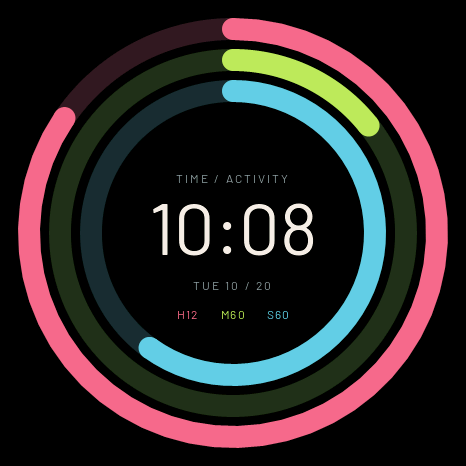
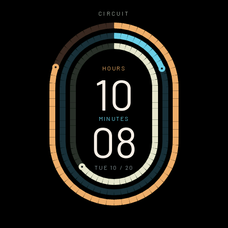
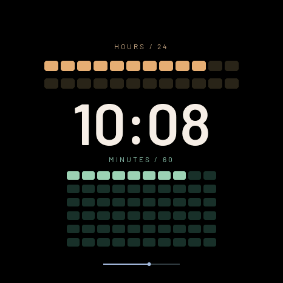
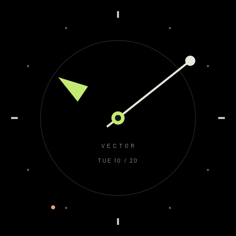
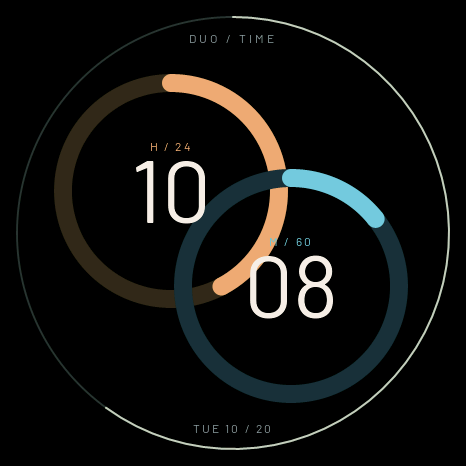
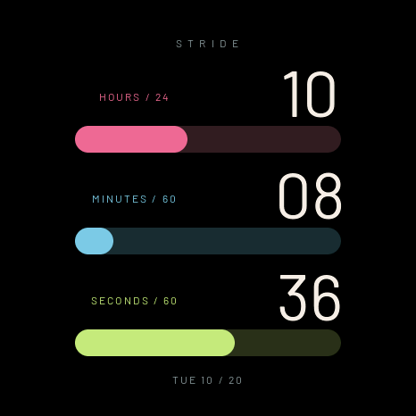

<!doctype html><html lang="zh-CN"><meta charset="utf-8"><meta name="viewport" content="width=1080"><title>运动图形</title><link rel="stylesheet" href="style.css">
    <main class="poster gallery-six" data-number="6"><header><div class="brand">soRound OS <span>明天 · 正式版见</span></div><div class="kicker">05 / 新表盘 · MOTION</div><h1>时间，<br>跑起来了。</h1><p class="sub">把时、分、秒，变成圆环、轨道、阵列和进度带。</p></header><div class="content"><div class="gallery cols-3"><figure class=""><figcaption>律动</figcaption></figure><figure class=""><figcaption>赛道</figcaption></figure><figure class=""><figcaption>阵列</figcaption></figure><figure class=""><figcaption>矢量</figcaption></figure><figure class=""><figcaption>双环</figcaption></figure><figure class=""><figcaption>步幅</figcaption></figure></div></div><footer><span>原生 UI 渲染 · 图形表达时分秒，不代表健康或运动数据</span><span>06 / 10.23</span></footer></main></html>